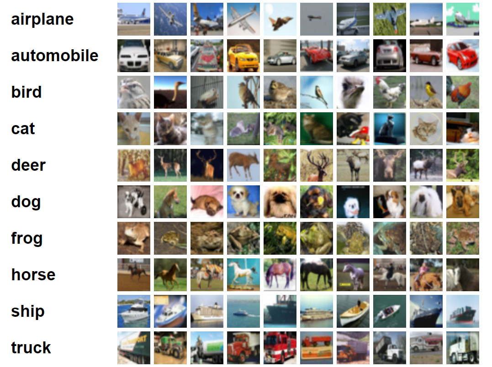

In this Project, a deep generative model (DCGAN) and Conolutional Neural network models were
utilized to map EEG features to 4 level of cognitive load.
In this ICMLA 2021 paper (published), I addressed the issues related to noise, small sample problem, and data representaion in applying deep learning on EEG data

In this Project, I implemented an all-in-one an object detection model using YOLO (You Only Look Once),YOLOV3.
I used the pre-trained model model weights from the model trained on MSCOCO dataset
using Darknet and perfomed transfer learning to perform detection on other images.

This projects involves transformation of time-series EEG signal into a spatial-spectral images called Topomap, augementing generated images with GAN and training CNN models for predicting
four levels of mental load

Deep CNN models were developped for two image classification tasks on two benchmark datasets ( Scene understanding and Cifar-10). The main goal was to test how different hyper-paramters such as optimzer affect model performance.